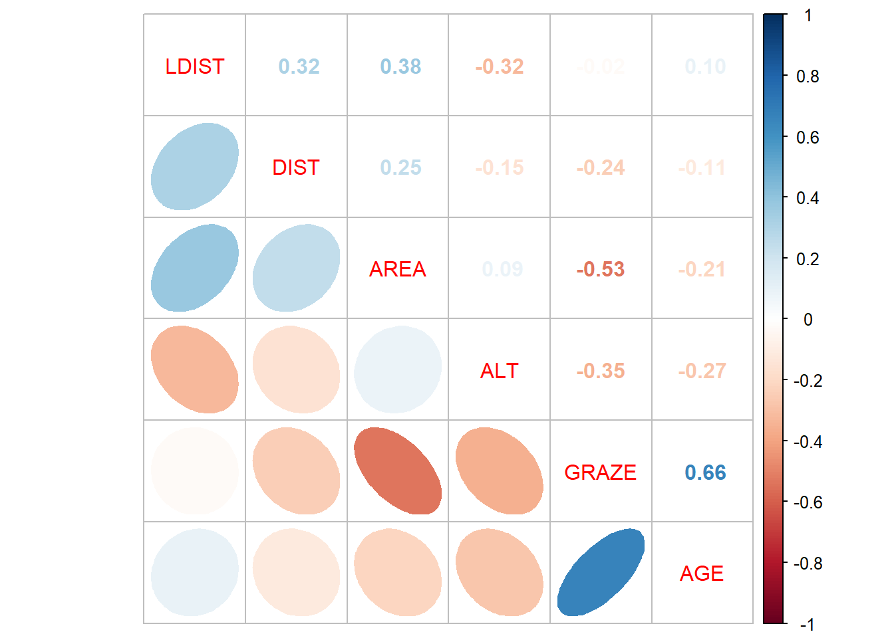
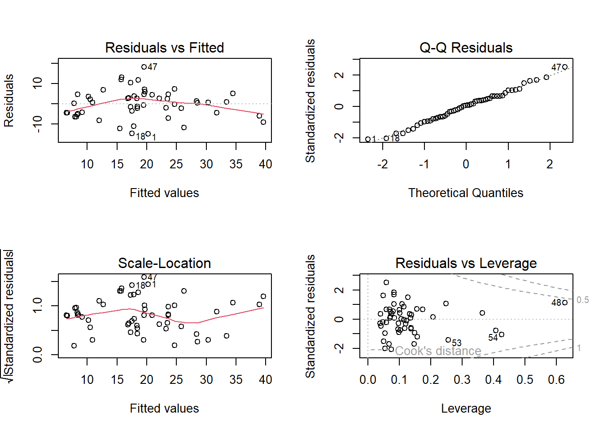
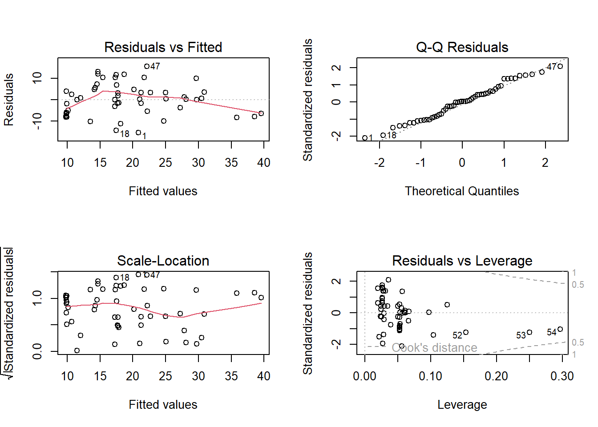
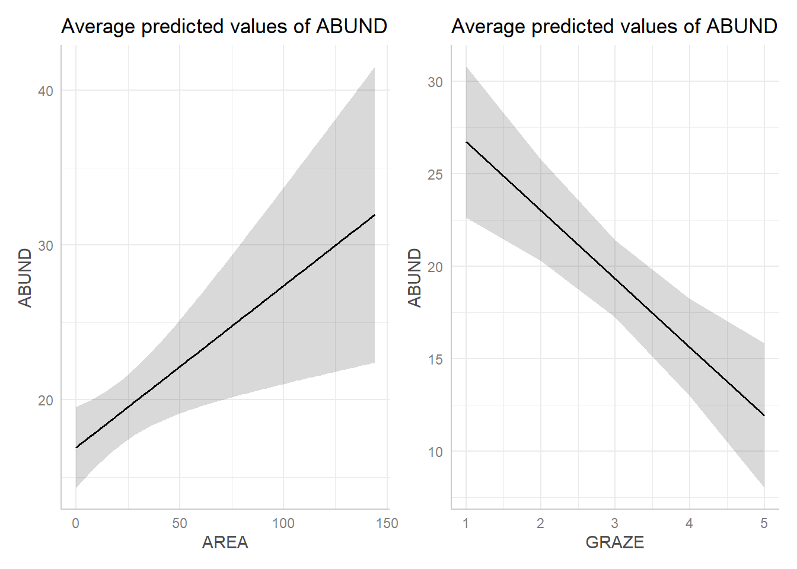

library(readr)
library(ggplot2)Statistik 4: Demo
Demoscript herunterladen (.qmd)
- Datensatz loyn.csv
Multiple lineare Regression
loyn <- read_delim("datasets/stat/loyn.csv", delim = ";")
str(loyn)spc_tbl_ [54 × 7] (S3: spec_tbl_df/tbl_df/tbl/data.frame)
$ ABUND: num [1:54] 5.3 2 1.5 17.1 13.8 14.1 3.8 2.2 3.3 3 ...
$ AREA : num [1:54] 0.1 0.5 0.5 1 1 1 1 1 1 1 ...
$ AGE : num [1:54] 16 64 84 18 66 19 29 64 19 84 ...
$ DIST : num [1:54] 39 234 104 66 246 234 467 284 156 311 ...
$ LDIST: num [1:54] 39 234 311 66 246 ...
$ GRAZE: num [1:54] 2 5 5 3 5 3 5 5 4 5 ...
$ ALT : num [1:54] 160 60 140 160 140 130 90 60 130 130 ...
- attr(*, "spec")=
.. cols(
.. ABUND = col_double(),
.. AREA = col_double(),
.. AGE = col_double(),
.. DIST = col_double(),
.. LDIST = col_double(),
.. GRAZE = col_double(),
.. ALT = col_double()
.. )
- attr(*, "problems")=<pointer: 0x000002441cee8ba0> summary(loyn) ABUND AREA AGE DIST
Min. : 1.50 Min. : 0.10 Min. : 8.00 Min. : 26.0
1st Qu.:11.80 1st Qu.: 2.00 1st Qu.:18.00 1st Qu.: 93.0
Median :20.40 Median : 7.00 Median :21.50 Median : 221.0
Mean :19.12 Mean : 21.02 Mean :34.31 Mean : 236.9
3rd Qu.:27.75 3rd Qu.: 25.00 3rd Qu.:57.50 3rd Qu.: 311.0
Max. :39.60 Max. :144.00 Max. :94.00 Max. :1427.0
LDIST GRAZE ALT
Min. : 26.0 Min. :1.000 Min. : 60.0
1st Qu.: 156.8 1st Qu.:2.000 1st Qu.:120.0
Median : 338.5 Median :3.000 Median :140.0
Mean : 729.8 Mean :3.056 Mean :143.3
3rd Qu.: 854.0 3rd Qu.:4.000 3rd Qu.:175.0
Max. :4426.0 Max. :5.000 Max. :220.0 Korrelation zwischen den Prädiktoren
# Wir setzen die Schwelle bei |0.7|
# Korrelationen rechnen details siehe: "?cor"
cor(loyn[, 2:7]) AREA AGE DIST LDIST GRAZE ALT
AREA 1.00000000 -0.21265343 0.2475258 0.37733668 -0.53118408 0.08935845
AGE -0.21265343 1.00000000 -0.1132931 0.09930812 0.66129235 -0.27242916
DIST 0.24752583 -0.11329311 1.0000000 0.31814676 -0.24330458 -0.15112326
LDIST 0.37733668 0.09930812 0.3181468 1.00000000 -0.02373893 -0.32359264
GRAZE -0.53118408 0.66129235 -0.2433046 -0.02373893 1.00000000 -0.35362007
ALT 0.08935845 -0.27242916 -0.1511233 -0.32359264 -0.35362007 1.00000000# oder mit Namen der columns resp. variablen
cor1 <-
loyn |>
subset(select = AREA:ALT) |>
cor()
# Korrelationen Visualisieren
library("corrplot")
corrplot.mixed(cor1, lower = "ellipse", upper = "number", order = "AOE")
# Nur Darstellung von variablen über Schwelenwert von |0.7|
cor1[abs(cor1)<0.7] <- 0
cor1 AREA AGE DIST LDIST GRAZE ALT
AREA 1 0 0 0 0 0
AGE 0 1 0 0 0 0
DIST 0 0 1 0 0 0
LDIST 0 0 0 1 0 0
GRAZE 0 0 0 0 1 0
ALT 0 0 0 0 0 1-> Keine Korrelation ist >|0.7|, so können wir alle Prädiktoren “behalten”. Aber es gilt zu beachten, dass GRAZE ziemlich stark |>0.6| mit AGE korreliert ist
# Volles Modell definieren
names(loyn)[1] "ABUND" "AREA" "AGE" "DIST" "LDIST" "GRAZE" "ALT" lm_1 <- lm(ABUND ~ AGE + AREA + DIST + LDIST + GRAZE + ALT, data = loyn)# Andere Variante, um korrelierte Prädiktoren zu finden
# (üblicher Schwellenwert VIF = 5)
library("car")
vif(lm_1) AGE AREA DIST LDIST GRAZE ALT
1.874993 1.763605 1.220125 1.465810 2.784577 1.346572 # Modeldiagnostik
par(mfrow = c(2, 2))
plot(lm_1)
-> Plot sieht zwar OK aus, aber mit 6 Prädiktoren für |<60| Beobachtungen ist das Modell wohl “overfitted”
Modellselektion
summary(lm_1)
Call:
lm(formula = ABUND ~ AGE + AREA + DIST + LDIST + GRAZE + ALT,
data = loyn)
Residuals:
Min 1Q Median 3Q Max
-14.8828 -4.4751 0.5753 4.5738 18.1946
Coefficients:
Estimate Std. Error t value Pr(>|t|)
(Intercept) 1.749e+01 6.599e+00 2.650 0.0109 *
AGE -9.155e-02 5.430e-02 -1.686 0.0985 .
AREA 1.232e-01 4.173e-02 2.953 0.0049 **
DIST 3.751e-03 5.083e-03 0.738 0.4642
LDIST -5.331e-05 1.335e-03 -0.040 0.9683
GRAZE -1.783e+00 1.181e+00 -1.510 0.1378
ALT 4.731e-02 2.900e-02 1.631 0.1095
---
Signif. codes: 0 '***' 0.001 '**' 0.01 '*' 0.05 '.' 0.1 ' ' 1
Residual standard error: 7.451 on 47 degrees of freedom
Multiple R-squared: 0.5722, Adjusted R-squared: 0.5176
F-statistic: 10.48 on 6 and 47 DF, p-value: 2.344e-07drop1(lm_1, test = "F")Single term deletions
Model:
ABUND ~ AGE + AREA + DIST + LDIST + GRAZE + ALT
Df Sum of Sq RSS AIC F value Pr(>F)
<none> 2609.5 223.41
AGE 1 157.79 2767.3 224.58 2.8419 0.098466 .
AREA 1 484.08 3093.6 230.60 8.7187 0.004904 **
DIST 1 30.24 2639.8 222.03 0.5447 0.464169
LDIST 1 0.09 2609.6 221.41 0.0016 0.968322
GRAZE 1 126.56 2736.1 223.97 2.2794 0.137794
ALT 1 147.76 2757.3 224.38 2.6612 0.109504
---
Signif. codes: 0 '***' 0.001 '**' 0.01 '*' 0.05 '.' 0.1 ' ' 1# Prädiktor mit grösstem p-Wert entfernen
lm_2 <- lm(ABUND ~ AGE + AREA + DIST + GRAZE + ALT, data = loyn)
# oder
lm_2 <- update(lm_1, ~. - LDIST)
# Oben beschriebener Schritt wiederholen bis nur noch signifikante Prädiktoren
# im Modell sind
drop1(lm_2, test = "F") Single term deletions
Model:
ABUND ~ AGE + AREA + DIST + GRAZE + ALT
Df Sum of Sq RSS AIC F value Pr(>F)
<none> 2609.6 221.41
AGE 1 158.71 2768.3 222.60 2.9192 0.093989 .
AREA 1 563.32 3172.9 229.97 10.3614 0.002309 **
DIST 1 31.10 2640.7 220.05 0.5721 0.453139
GRAZE 1 127.97 2737.6 222.00 2.3539 0.131535
ALT 1 163.04 2772.6 222.68 2.9988 0.089749 .
---
Signif. codes: 0 '***' 0.001 '**' 0.01 '*' 0.05 '.' 0.1 ' ' 1lm_3 <- update(lm_2, ~. - DIST)
drop1(lm_3, test = "F") Single term deletions
Model:
ABUND ~ AGE + AREA + GRAZE + ALT
Df Sum of Sq RSS AIC F value Pr(>F)
<none> 2640.7 220.05
AGE 1 154.79 2795.5 221.13 2.8722 0.096468 .
AREA 1 599.14 3239.8 229.09 11.1174 0.001635 **
GRAZE 1 158.71 2799.4 221.20 2.9449 0.092467 .
ALT 1 138.17 2778.9 220.80 2.5639 0.115759
---
Signif. codes: 0 '***' 0.001 '**' 0.01 '*' 0.05 '.' 0.1 ' ' 1lm_4 <- update(lm_3, ~. - ALT)
drop1(lm_4, test = "F") Single term deletions
Model:
ABUND ~ AGE + AREA + GRAZE
Df Sum of Sq RSS AIC F value Pr(>F)
<none> 2778.9 220.80
AGE 1 163.46 2942.3 221.89 2.9412 0.09254 .
AREA 1 541.87 3320.8 228.42 9.7497 0.00298 **
GRAZE 1 264.51 3043.4 223.71 4.7593 0.03387 *
---
Signif. codes: 0 '***' 0.001 '**' 0.01 '*' 0.05 '.' 0.1 ' ' 1lm_5 <- update(lm_4, ~. - AGE)
drop1(lm_5, test = "F")Single term deletions
Model:
ABUND ~ AREA + GRAZE
Df Sum of Sq RSS AIC F value Pr(>F)
<none> 2942.3 221.89
AREA 1 440.79 3383.1 227.43 7.6403 0.007923 **
GRAZE 1 1089.71 4032.1 236.91 18.8881 6.622e-05 ***
---
Signif. codes: 0 '***' 0.001 '**' 0.01 '*' 0.05 '.' 0.1 ' ' 1summary(lm_5)
Call:
lm(formula = ABUND ~ AREA + GRAZE, data = loyn)
Residuals:
Min 1Q Median 3Q Max
-15.5390 -6.3337 0.1902 4.4737 15.5567
Coefficients:
Estimate Std. Error t value Pr(>|t|)
(Intercept) 28.2303 3.2660 8.644 1.45e-11 ***
AREA 0.1045 0.0378 2.764 0.00792 **
GRAZE -3.7009 0.8516 -4.346 6.62e-05 ***
---
Signif. codes: 0 '***' 0.001 '**' 0.01 '*' 0.05 '.' 0.1 ' ' 1
Residual standard error: 7.596 on 51 degrees of freedom
Multiple R-squared: 0.5177, Adjusted R-squared: 0.4987
F-statistic: 27.37 on 2 and 51 DF, p-value: 8.425e-09par(mfrow = c(2, 2))
plot(lm_5)
-> das minimal adäquate Modell enthält noch zwei Prädiktoren (AREA; GRAZE) und dessen Residualplots sehen ok aus.
Hierarchical partitioning
Wir können auch schauen wie bedeutsam die einzelnen Variablen sind:
library("relaimpo")
# Berechnen
metrics <- calc.relimp(lm_1, type = c("lmg", "first"))
cbind(I = metrics$lmg,
J = metrics$first - metrics$lmg,
Total = metrics$first) I J Total
AGE 0.11351597 0.1539730784 0.267489048
AREA 0.17941694 0.1596031200 0.339020063
DIST 0.01986977 0.0307746481 0.050644413
LDIST 0.00827103 -0.0007561283 0.007514902
GRAZE 0.19052943 0.2548693094 0.445398737
ALT 0.06061495 0.0610176713 0.121632624-> auch hier haben AREA und GRAZE die höchsten Werte (und an dritter Stelle AGE, der mit GRAZE am stärksten korreliert ist)
Partial Effect Plot
library(ggeffects)
p1 <- predict_response(lm_5, terms = "AREA", margin = "empirical") |>
plot()
p2 <- predict_response(lm_5, terms = "GRAZE", margin = "empirical") |>
plot()
library(patchwork)
p1 + p2
margin = “mean_reference” (default): “non-focal” numerische prädiktoren werden gemittelt “non-focal” kategoriale prädiktoren (factors) auf das Referenzlevel (erster level des factors) fixiert
margin = “empirical”: “non-focal” numerische prädiktoren werden gemittelt “non-focal” kategoriale prädiktoren (factors) werden proportinal zur Häufigkeit gemittelt
Da wir oben nur numerische prädiktoren haben hat die Wahl kein Einfluss auf das Resultat
Multimodel inference
library("MuMIn")
global_model <- lm(ABUND ~ AGE + AREA + DIST + LDIST + GRAZE + ALT, data = loyn)
options(na.action = "na.fail")
allmodels <- dredge(global_model)
allmodelsGlobal model call: lm(formula = ABUND ~ AGE + AREA + DIST + LDIST + GRAZE + ALT,
data = loyn)
---
Model selection table
(Intrc) AGE ALT AREA DIST GRAZE LDIST df logLik AICc
24 19.460 -0.09049 0.04249 0.1257 -1.954 6 -181.648 377.1
22 27.250 -0.09295 0.1187 -2.434 5 -183.025 377.3
23 20.180 0.04379 0.1120 -3.172 5 -183.186 377.6
8 13.020 -0.14830 0.05448 0.1607 5 -183.224 377.7
21 28.230 0.1045 -3.701 4 -184.568 378.0
16 10.990 -0.14310 0.06018 0.1522 0.005130 6 -182.621 379.0
32 17.440 -0.09167 0.04764 0.1226 0.003705 -1.787 7 -181.328 379.1
31 18.300 0.04861 0.1090 0.003463 -3.031 6 -182.922 379.6
54 27.240 -0.09146 0.1257 -2.375 -4.979e-04 6 -182.936 379.7
56 19.240 -0.09093 0.04375 0.1235 -1.960 1.699e-04 7 -181.638 379.7
30 26.780 -0.09359 0.1170 0.001608 -2.386 6 -182.964 379.7
6 21.570 -0.17130 0.1629 4 -185.480 379.8
53 28.190 0.1137 -3.600 -6.372e-04 5 -184.429 380.1
55 20.130 0.04406 0.1116 -3.174 3.620e-05 6 -183.185 380.2
40 12.900 -0.14860 0.05513 0.1596 8.597e-05 6 -183.221 380.2
29 27.850 0.1030 0.001316 -3.669 5 -184.530 380.3
48 11.230 -0.14210 0.05871 0.1546 0.005306 -2.191e-04 7 -182.606 381.6
38 21.780 -0.16570 0.1728 -8.285e-04 5 -185.250 381.7
14 20.930 -0.16970 0.1583 0.002886 5 -185.298 381.8
64 17.490 -0.09155 0.04731 0.1232 0.003751 -1.783 -5.331e-05 8 -181.327 381.9
62 26.540 -0.09188 0.1256 0.002372 -2.285 -6.734e-04 7 -182.814 382.1
63 18.450 0.04749 0.1112 0.003619 -3.012 -1.800e-04 7 -182.912 382.3
61 27.540 0.1136 0.002233 -3.521 -8.030e-04 6 -184.327 382.4
17 34.250 -4.951 3 -188.337 383.2
46 20.950 -0.16160 0.1696 0.004052 -1.107e-03 6 -184.914 383.6
19 28.380 0.03376 -4.613 4 -187.620 384.1
18 34.150 -0.05604 -4.290 4 -187.835 384.5
51 24.960 0.04669 -4.461 1.504e-03 5 -186.871 385.0
49 33.610 -4.939 8.194e-04 4 -188.092 385.0
25 33.120 0.003213 -4.831 4 -188.133 385.1
27 25.260 0.04131 0.005130 -4.345 5 -187.120 385.5
20 28.540 -0.05253 0.03230 -4.008 5 -187.169 385.6
50 33.340 -0.06356 -4.185 1.023e-03 5 -187.453 386.2
52 24.690 -0.06351 0.04667 -3.708 1.707e-03 6 -186.204 386.2
26 32.900 -0.05863 0.003557 -4.126 5 -187.581 386.4
28 25.270 -0.05561 0.04017 0.005404 -3.690 6 -186.605 387.0
59 23.190 0.05027 0.003783 -4.287 1.273e-03 6 -186.611 387.0
7 4.042 0.07835 0.1830 4 -189.182 387.2
57 32.930 0.002318 -4.855 6.458e-04 5 -187.996 387.2
15 1.681 0.08504 0.1703 0.007048 5 -188.251 387.8
60 22.870 -0.06421 0.05035 0.003888 -3.521 1.472e-03 7 -185.922 388.3
58 32.630 -0.06400 0.002421 -4.092 8.429e-04 6 -187.346 388.5
39 4.728 0.07497 0.1878 -4.146e-04 5 -189.137 389.5
47 2.837 0.07890 0.1788 0.007662 -8.235e-04 6 -188.077 389.9
5 15.090 0.1918 3 -193.075 392.6
37 15.990 0.2110 -1.793e-03 4 -192.219 393.3
45 14.910 0.2046 0.006347 -2.192e-03 5 -191.569 394.4
13 14.250 0.1847 0.004158 4 -192.789 394.4
36 12.550 -0.19070 0.07799 2.643e-03 5 -192.165 395.6
12 12.580 -0.17450 0.07003 0.010510 5 -192.232 395.7
44 10.040 -0.17890 0.08236 0.008064 2.057e-03 6 -191.118 396.0
4 17.190 -0.18960 0.05881 4 -194.072 397.0
2 26.500 -0.21500 3 -195.849 398.2
10 24.300 -0.20710 0.008133 4 -194.795 398.4
34 25.520 -0.22070 1.612e-03 4 -195.130 399.1
42 24.050 -0.21240 0.006624 1.084e-03 5 -194.496 400.2
11 1.164 0.10260 0.013710 4 -198.209 405.2
43 -1.215 0.11370 0.011720 1.732e-03 5 -197.580 406.4
35 1.436 0.11030 2.577e-03 4 -199.349 407.5
3 6.024 0.09136 3 -200.752 408.0
9 16.550 0.010850 3 -202.851 412.2
1 19.120 2 -204.254 412.7
41 16.470 0.010600 1.941e-04 4 -202.843 414.5
33 18.390 1.002e-03 3 -204.050 414.6
delta weight
24 0.00 0.127
22 0.22 0.114
23 0.54 0.097
8 0.61 0.093
21 0.87 0.082
16 1.95 0.048
32 2.01 0.046
31 2.55 0.035
54 2.58 0.035
56 2.63 0.034
30 2.63 0.034
6 2.69 0.033
53 3.03 0.028
55 3.08 0.027
40 3.15 0.026
29 3.23 0.025
48 4.56 0.013
38 4.67 0.012
14 4.76 0.012
64 4.77 0.012
62 4.98 0.011
63 5.18 0.010
61 5.36 0.009
17 6.07 0.006
46 6.53 0.005
19 6.97 0.004
18 7.40 0.003
51 7.91 0.002
49 7.92 0.002
25 8.00 0.002
27 8.41 0.002
20 8.50 0.002
50 9.07 0.001
52 9.11 0.001
26 9.33 0.001
28 9.91 0.001
59 9.93 0.001
7 10.10 0.001
57 10.16 0.001
15 10.67 0.001
60 11.20 0.000
58 11.40 0.000
39 12.44 0.000
47 12.86 0.000
5 15.55 0.000
37 16.17 0.000
45 17.30 0.000
13 17.31 0.000
36 18.50 0.000
12 18.63 0.000
44 18.94 0.000
4 19.88 0.000
2 21.10 0.000
10 21.32 0.000
34 21.99 0.000
42 23.16 0.000
11 28.15 0.000
43 29.33 0.000
35 30.43 0.000
3 30.90 0.000
9 35.10 0.000
1 35.66 0.000
41 37.42 0.000
33 37.50 0.000
Models ranked by AICc(x) Wir haben mehre Modelle mit einem delta AICc <2, das heisst wir haben nicht ein eindeutig bestes Modell (welches wir mit der funktion “get.models” selektieren könnten)
# Variable importance
sw(allmodels) AREA GRAZE AGE ALT DIST LDIST
Sum of weights: 0.97 0.76 0.66 0.58 0.27 0.23
N containing models: 32 32 32 32 32 32 -> Auch mit dieser Sichtweise sind AREA und GRAZE die wichtigste Prädiktoren
# Model averaging
avgmodel <- model.avg(allmodels)
summary(avgmodel)
Call:
model.avg(object = allmodels)
Component model call:
lm(formula = ABUND ~ <64 unique rhs>, data = loyn)
Component models:
df logLik AICc delta weight
1235 6 -181.65 377.08 0.00 0.13
135 5 -183.02 377.30 0.22 0.11
235 5 -183.19 377.62 0.54 0.10
123 5 -183.22 377.70 0.61 0.09
35 4 -184.57 377.95 0.87 0.08
1234 6 -182.62 379.03 1.95 0.05
12345 7 -181.33 379.09 2.01 0.05
2345 6 -182.92 379.63 2.55 0.04
1356 6 -182.94 379.66 2.58 0.03
12356 7 -181.64 379.71 2.63 0.03
1345 6 -182.96 379.72 2.63 0.03
13 4 -185.48 379.78 2.69 0.03
356 5 -184.43 380.11 3.03 0.03
2356 6 -183.19 380.16 3.08 0.03
1236 6 -183.22 380.23 3.15 0.03
345 5 -184.53 380.31 3.23 0.03
12346 7 -182.61 381.65 4.56 0.01
136 5 -185.25 381.75 4.67 0.01
134 5 -185.30 381.85 4.76 0.01
123456 8 -181.33 381.85 4.77 0.01
13456 7 -182.81 382.06 4.98 0.01
23456 7 -182.91 382.26 5.18 0.01
3456 6 -184.33 382.44 5.36 0.01
5 3 -188.34 383.15 6.07 0.01
1346 6 -184.91 383.61 6.53 0.00
25 4 -187.62 384.06 6.97 0.00
15 4 -187.83 384.49 7.40 0.00
256 5 -186.87 384.99 7.91 0.00
56 4 -188.09 385.00 7.92 0.00
45 4 -188.13 385.08 8.00 0.00
245 5 -187.12 385.49 8.41 0.00
125 5 -187.17 385.59 8.50 0.00
156 5 -187.45 386.16 9.07 0.00
1256 6 -186.20 386.19 9.11 0.00
145 5 -187.58 386.41 9.33 0.00
1245 6 -186.61 387.00 9.91 0.00
2456 6 -186.61 387.01 9.93 0.00
23 4 -189.18 387.18 10.10 0.00
456 5 -188.00 387.24 10.16 0.00
234 5 -188.25 387.75 10.67 0.00
12456 7 -185.92 388.28 11.20 0.00
1456 6 -187.35 388.48 11.40 0.00
236 5 -189.14 389.52 12.44 0.00
2346 6 -188.08 389.94 12.86 0.00
3 3 -193.07 392.63 15.55 0.00
36 4 -192.22 393.25 16.17 0.00
346 5 -191.57 394.39 17.30 0.00
34 4 -192.79 394.39 17.31 0.00
126 5 -192.16 395.58 18.50 0.00
124 5 -192.23 395.71 18.63 0.00
1246 6 -191.12 396.02 18.94 0.00
12 4 -194.07 396.96 19.88 0.00
1 3 -195.85 398.18 21.10 0.00
14 4 -194.79 398.41 21.32 0.00
16 4 -195.13 399.08 21.99 0.00
146 5 -194.50 400.24 23.16 0.00
24 4 -198.21 405.24 28.15 0.00
246 5 -197.58 406.41 29.33 0.00
26 4 -199.35 407.51 30.43 0.00
2 3 -200.75 407.98 30.90 0.00
4 3 -202.85 412.18 35.10 0.00
(Null) 2 -204.25 412.74 35.66 0.00
46 4 -202.84 414.50 37.42 0.00
6 3 -204.05 414.58 37.50 0.00
Term codes:
AGE ALT AREA DIST GRAZE LDIST
1 2 3 4 5 6
Model-averaged coefficients:
(full average)
Estimate Std. Error Adjusted SE z value Pr(>|z|)
(Intercept) 2.125e+01 7.540e+00 7.618e+00 2.790 0.00528 **
AGE -7.527e-02 7.177e-02 7.236e-02 1.040 0.29823
ALT 2.811e-02 3.196e-02 3.231e-02 0.870 0.38427
AREA 1.235e-01 4.745e-02 4.818e-02 2.564 0.01035 *
GRAZE -2.080e+00 1.621e+00 1.633e+00 1.273 0.20292
DIST 9.132e-04 3.061e-03 3.117e-03 0.293 0.76950
LDIST -4.925e-05 6.691e-04 6.839e-04 0.072 0.94259
(conditional average)
Estimate Std. Error Adjusted SE z value Pr(>|z|)
(Intercept) 21.2504039 7.5395494 7.6177190 2.790 0.00528 **
AGE -0.1132699 0.0587077 0.0597924 1.894 0.05817 .
ALT 0.0481783 0.0280034 0.0286744 1.680 0.09292 .
AREA 0.1275241 0.0425967 0.0434334 2.936 0.00332 **
GRAZE -2.7514534 1.2757684 1.2968574 2.122 0.03387 *
DIST 0.0034010 0.0051418 0.0052641 0.646 0.51823
LDIST -0.0002128 0.0013783 0.0014092 0.151 0.87997
---
Signif. codes: 0 '***' 0.001 '**' 0.01 '*' 0.05 '.' 0.1 ' ' 1# Nur Estimates
summary(avgmodel)$coefficients (Intercept) AGE ALT AREA GRAZE DIST
full 21.2504 -0.07527122 0.02811021 0.1235275 -2.079840 0.0009132418
subset 21.2504 -0.11326991 0.04817829 0.1275241 -2.751453 0.0034009585
LDIST
full -4.925166e-05
subset -2.128051e-04# Confindence intervals
confint(avgmodel) 2.5 % 97.5 %
(Intercept) 6.319949053 36.180858723
AGE -0.230460847 0.003921031
ALT -0.008022574 0.104379146
AREA 0.042396229 0.212651977
GRAZE -5.293247097 -0.209659662
DIST -0.006916400 0.013718317
LDIST -0.002974830 0.002549220# Modeldiagnostik
par(mfrow = c(2, 2))
plot(global_model)